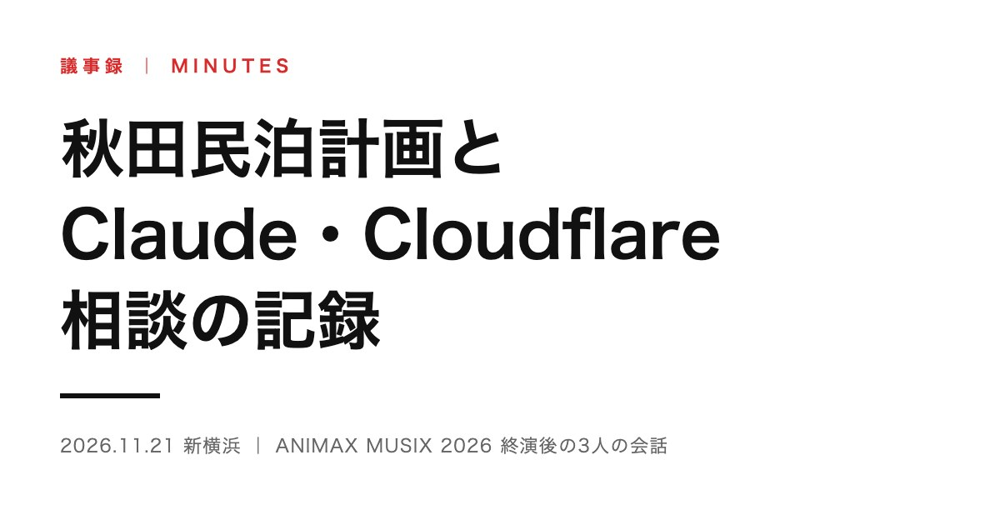
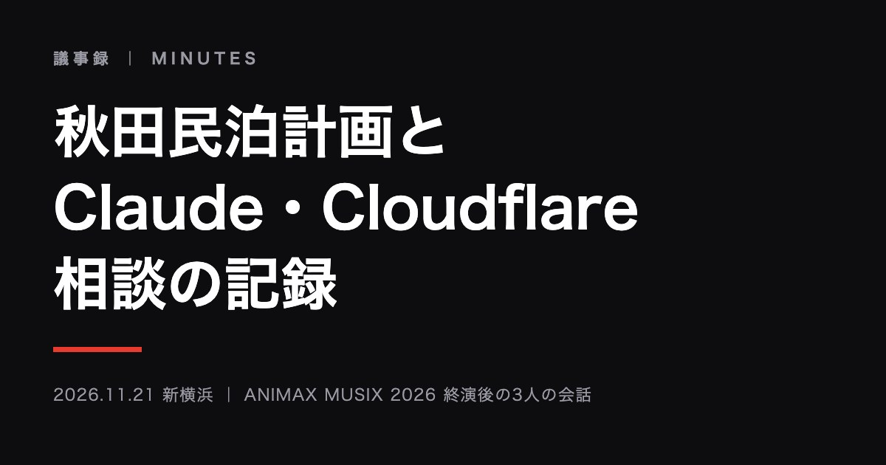
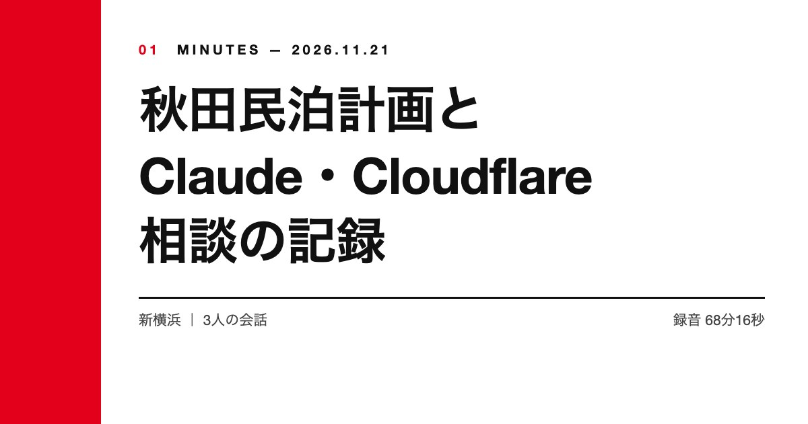
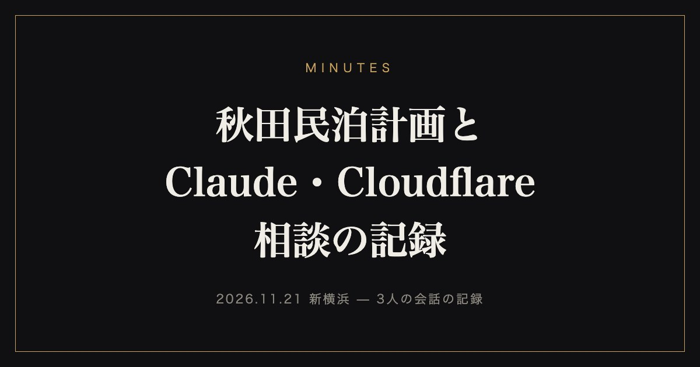
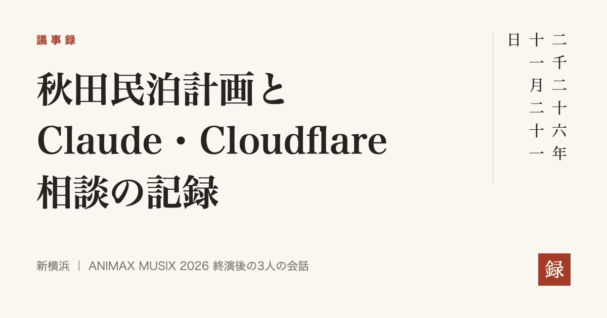

議事録「秋田民泊計画とClaude・Cloudflare相談の記録」のOGP（SNSシェア用サムネイル）候補です。実寸1200×630で並べています。正本ページには案1を仮設定済みです。リデザイン5案はこちら。

白地に黒の大きなタイトルと赤いキッカーだけ。最も素直で、どのタイムラインでも読みやすい案。

黒地に白抜きタイトルと短い赤下線。夜の記録らしい重さとコントラストの案。

左端の赤ブロックと厳密なグリッド。リデザイン案R1と対になる編集デザインの案。

金の細枠に明朝を中央配置。静かで高級感のある案。リデザイン案R3と対になる。

生成りの紙面に明朝、縦書きの日付と朱の印。リデザイン案R5と対になる案。